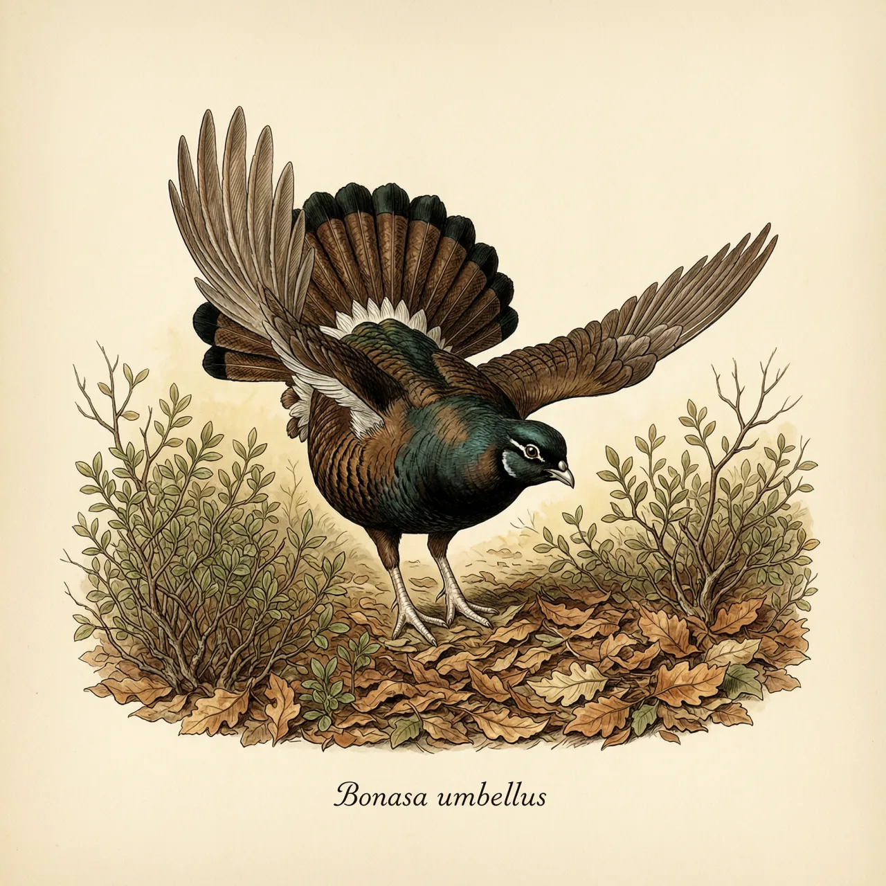
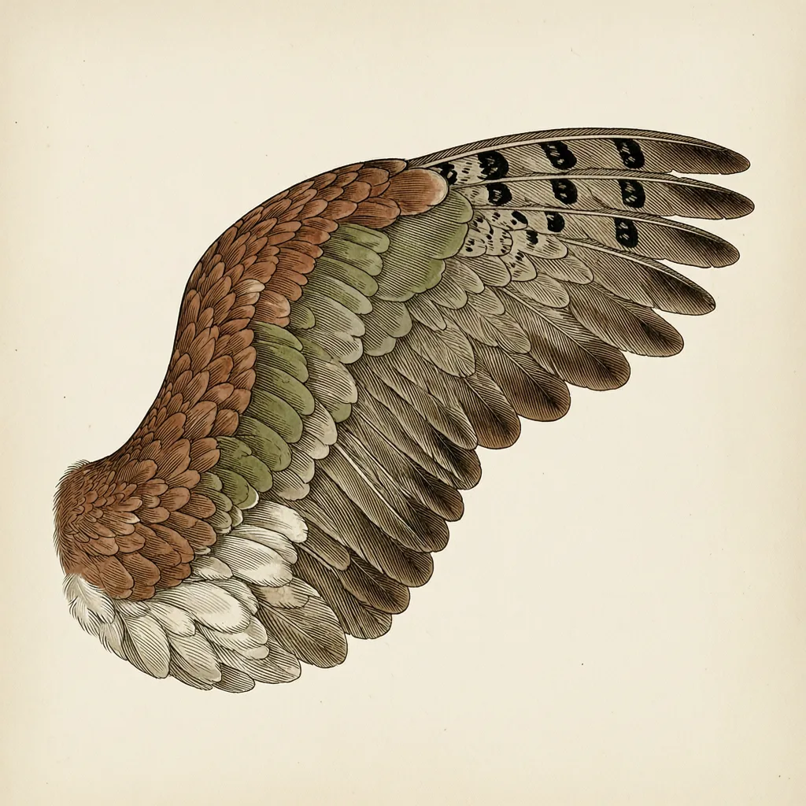

披肩榛鸡是北美东部林地的雉科鸟类，留鸟，终年不离开分布区，生活在密集的矮灌木丛中，以陆生植物为主食。雄鸟求偶不展示羽毛，而是高速振动翅膀压出低沉的嗡嗡鼓声，靠声音争夺配偶，这在以艳丽羽毛著称的雉科里并不多见。
披肩榛鸡出现的地点，是北美东部林地里那些矮灌木长得最密的地方：林缘、倒木迹地、采伐后的空地。它是留鸟，终年守在分布区内不迁徙，靠灌木层生活——在灌丛间奔走觅食，受惊就钻进深处，把自己藏进落叶与枯枝之间。食物也主要出自这里：草食性，以陆生植物为主，所以它很少离开有得吃又有得躲的稠密灌丛。
雄鸟找对象的方式是擂一台「鼓」。春天，它高速向前振动双翅，把空气压出低沉的嗡嗡声，隔着一片林地都能听到，远处听像闷雷。雌鸟凭这个声音挑选，鼓声越有力、越持久的雄披肩榛鸡越占优势；听到别的雄鸟的鼓声，领地拥有者也会做出回应。求偶的竞争先发生在耳朵里，而不是眼睛里。
这件事放在雉科里显得格外反常。孔雀、锦鸡都算它的科内亲戚，那是一个靠饰羽争奇斗艳的家族，雄披肩榛鸡却几乎没有饰羽，繁殖季也长不出彩色羽毛，通身是暗淡的保护色。它把性展示的信号从视觉挪到了听觉——在视线常被矮灌木切断的林下，一声低沉的嗡嗡鼓声，可能比开屏传得更远。
